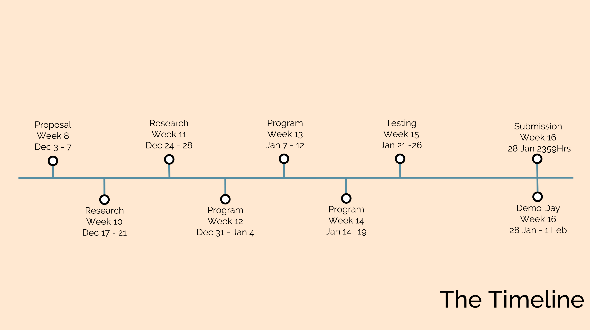
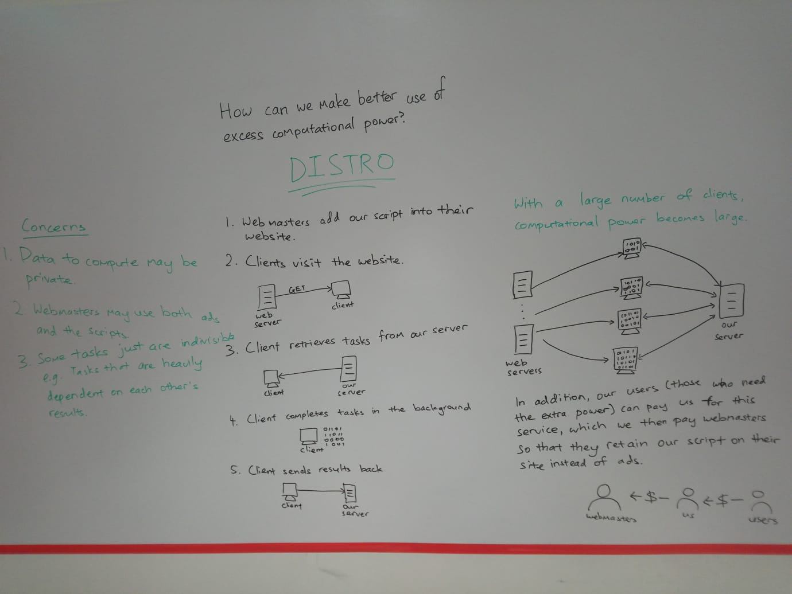

004: FIRST WEEK OF THE SEMESTER BREAK
Again, I was unable to do any work to help with the project because I was overseas for the whole week. With christmas coming up, I hope that I don't have to go out for any events so that I can continue working on my project.
22 December 2018
003: DIDN'T DO MUCH THIS WEEK
This week the school held the common tests so I spent my time doing my revision for it. I wasn't able to do much for the project this week as I didn't want to do badly for the tests. I can only do more in the following week.
14 December 2018
002: PRESENTATION OF OUR PROPOSAL
On Wedneday (5th December), we presented our proposal to our P1 lecturer. We talked able using excess computatinal power for good, for example, projects such as Folding@Home or the Great Internet Mersenne Prime Search both use distributed computing to solve research problems.
The main problem that we realised is that people need to be willing to download the software those projects provide. Also, the clients would also need to leave their computer on for the software to run in the background.
We'd like to solve these two problems by making it easier to donate computation power to support those projects.
First, we make the process of donating computatinal power easier by doing the computation through internet browsers with no additional software to be downloaded. The Berkeley Open Infrastructure for Network Computing (BOINC) helps with fusing multiple projects through a common infrastructure but users would still have to download their software. Second, we make use of the time that users spend on tasks that are not computationally intensive to do the tasks. This means that users do not need to keep their computer on to help theses projects, all they have to do is visit a site that supports the project.
Before we move into the development of this solution, Joel (my partner) and I will be researching more on the problem to better understand how the current infrastructure works.
Mr Saiful (our P1 lecturer) gave us feedback on our presentation and he pointed out that we should mention that we are doing this for helping other research problems and that we should work on convincing users why these problems are important to solve.
Our timeline is as shown below:

7 December 2018
001: IDEA APPROVED!
This blog is for one of my modules that I'm currently taking, Portfolio 1.
Joel, my partner, and I have come up with an idea for what we would like to do for our Portfolio 1 Project.

Similar to Cryptojacking, websites would include our JavaScript which then calls onto our backend. Our backend would then send across the tasks to execute. After the client has executed the task, they send back the result to our backend. I foresee that this could be applied to any field that requires large amounts of concurrent tasks, e.g. Machine Learning.
30 November 2018